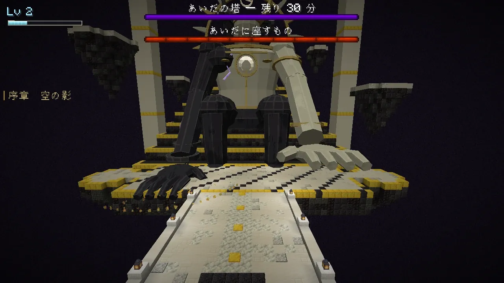
天と淵のあいだ
戦いと職
職を一つ選び、技の木を育てて戦います。主の大技には予告があり、見て避ければ勝てる作りです。
SIX JOBS
六つの職
最初の職は、はじまりの島の祠で選びます。あとから都と町の「職の間」（訓練場の師範）で替えられます。レベルは一人に一つ、技の点は職ごとに数えます。

岩守り
戦士
前に立って敵の狙いを引きつけ、仲間の前で受け止めます。大きな相手を斬る巨神斬りが幹の技です。盾で耐えるか、大剣で斬るか、振り回して群れを薙ぐかを型で選びます。
- 武器
- 剣・大剣・鉾・槍・盾
- 役目
- 前に立つ壁
- 主な基礎
- 筋力・耐久
盾の守り手
傷を受けるほど重みが溜まり、満ちた盾殴りが岩を砕く。
溜まるもの: 岩の重み
巨神斬りの剣士
ふつうの斬りで研ぎを溜め、巨神斬りに全部をのせる。
溜まるもの: 研ぎ
鯨尾の振り回し
回し斬りで当てるほど勢いがつき、振りも足も速くなる。
溜まるもの: 勢い
使う技（木の中から 4 つまで。金の枠が幹の技）
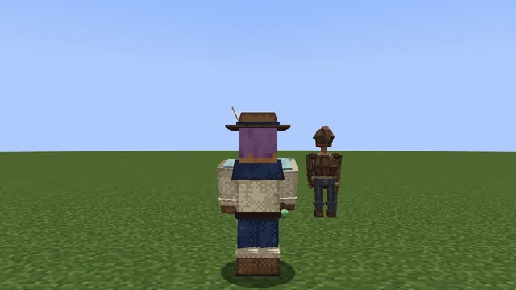

灰の鍛え人
鍛冶師
鎚と斧で、火をまとった重い一撃を振るいます。武器を焼き入れて鍛え、灰と火花で敵の群れを崩します。技を使うほど炉が熱くなる職です。
- 武器
- 鎚・斧
- 役目
- 火の重い一撃
- 主な基礎
- 筋力・精神
熾火の槌
技で炉の熱を溜め、満ちた熾火の槌が前に火の柱を立てる。
溜まるもの: 炉の熱
焼き入れ
焼き入れた武器で当てて鍛えを溜め、炎の傷を重ねる。
溜まるもの: 鍛え
灰散らし
灰をかぶせた敵に技を当てて層を重ね、火花散らしで弾けさせる。
溜まるもの: 灰の層
使う技（木の中から 4 つまで。金の枠が幹の技）
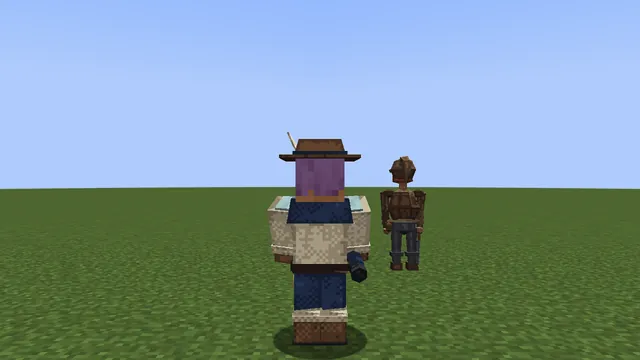

星読み
魔法使い
杖で遠くから魔法を撃ちます。雷・火・潮の三つの型を持ち、守りは薄いぶん、届く距離と攻めは随一です。転移で間合いを取り直せます。
- 武器
- 杖
- 役目
- 遠くからの魔法
- 主な基礎
- 精神
雷
雷の矢を重ねた敵から、まわりの敵へ雷が跳ねる。
溜まるもの: 帯電
火
燃えている敵に当てるほど、熾火の玉が大きく強くなる。
溜まるもの: 熾火
潮
凍て潮で冷やした敵を凍らせ、凍った敵へ雷の矢を通す。
溜まるもの: 凍え
使う技（木の中から 4 つまで。金の枠が幹の技）
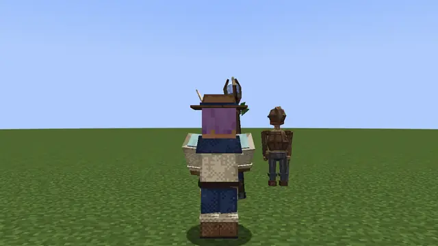

骨の射手
弓使い
弓とクロスボウで遠くから狙い、罠と足止めの矢で敵の足を止めます。動かずに狙うか、罠を張るか、矢を雨のように降らせるかを型で選びます。
- 武器
- 弓・クロスボウ
- 役目
- 遠くからの攻めと罠
- 主な基礎
- 敏捷
雲穿ち
動かずに狙いを溜め、雲穿ちで何体も貫く。
溜まるもの: 狙い
骨の罠
罠どうしを糸でつなぎ、足止めの矢でまとめてはぜさせる。
溜まるもの: 罠の糸
天の驟雨
ふつうの矢で矢筒を満たし、天の驟雨でまとめて降らせる。
溜まるもの: 空の矢筒
使う技（木の中から 4 つまで。金の枠が幹の技）
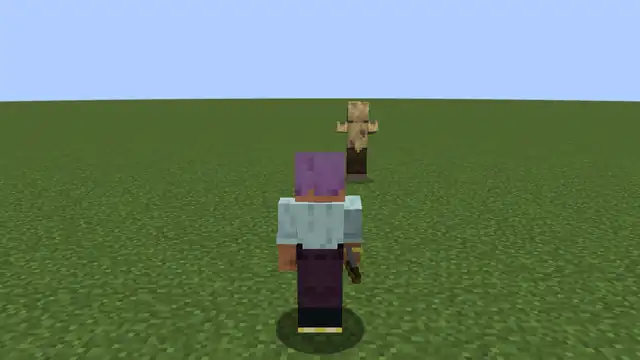

風読み
暗殺者
短剣・牙・爪で素早く踏み込み、背後から刺します。霧に隠れ、跳び退いて、また詰める。手数と速さの職です。
- 武器
- 短剣・牙・爪
- 役目
- 速い攻めと背後
- 主な基礎
- 敏捷
影の刺客
一体に影の印を重ね、風裂きで一度に弾けさせる。
溜まるもの: 影の印
風の舞い手
違う技をつなぐほど舞が重なり、傷が増え、待ちが縮む。
溜まるもの: 舞
孤風
まわりに仲間がいないあいだに溜め、次の一撃を 2.5 倍にする。
溜まるもの: 孤り
使う技（木の中から 4 つまで。金の枠が幹の技）
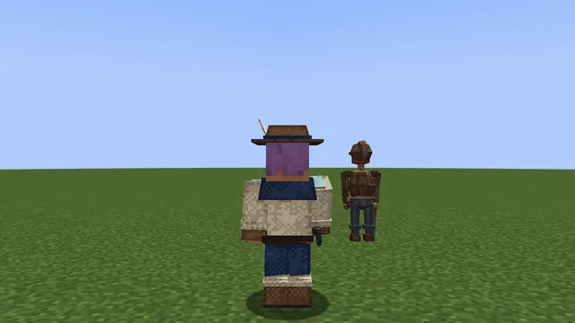

潮歌い
呪術師
鈴と祭具で唄い、仲間を守り、敵を引き寄せ、呪いで崩します。パーティの支え役ですが、呪いの型なら一人でも削れます。
- 武器
- 鈴・祭具
- 役目
- 支えと崩し
- 主な基礎
- 精神
守りの唄
唄で調べを溜め、灯の守り札を広く長くする。
溜まるもの: 調べ
引き潮
引き潮で敵を引くたびに潮位が上がり、満ち潮で押し流す。
溜まるもの: 潮位
呪い
同じ敵に呪いの印を重ね、三つで弾けて隣の敵へ移る。
溜まるもの: 呪いの重ね
使う技（木の中から 4 つまで。金の枠が幹の技）
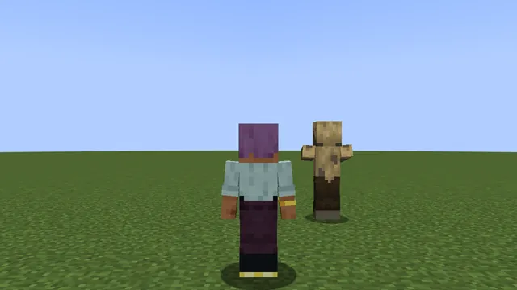
型の帯（難しさ・攻め・守り・届く距離・速さ）は、遊びの手ごたえの目安です。持っている武器が今の職のものでないと、技は使えず、近接の力も半分になります。
SKILL TREE
技の木
K で開く技の画面は、職ごとの技の木です。

1 レベルにつき 1 点。木の節は三つの型に分かれ、Lv 50 で取れるのは木の半分ほどです。一つの型を深く取るか、二つを混ぜるかで、同じ職でも違う戦い方になります。
- 使う技は木の中から 4 つまで選び、R G V Z の枠に置きます。
- 筋力・敏捷・精神・耐久の四つは、木の「基礎の節」で上がります（レベルでは上がりません）。
- 型に 8 点使うと、その型の「溜まるもの」がマナの帯の上で目覚めます。
- 型の奥には「要」があり、型の点を 20 使うと開きます。
- 振り直しは Lv 15 まで無料。木の取り方は職ごとに 2 つまで保存できます。
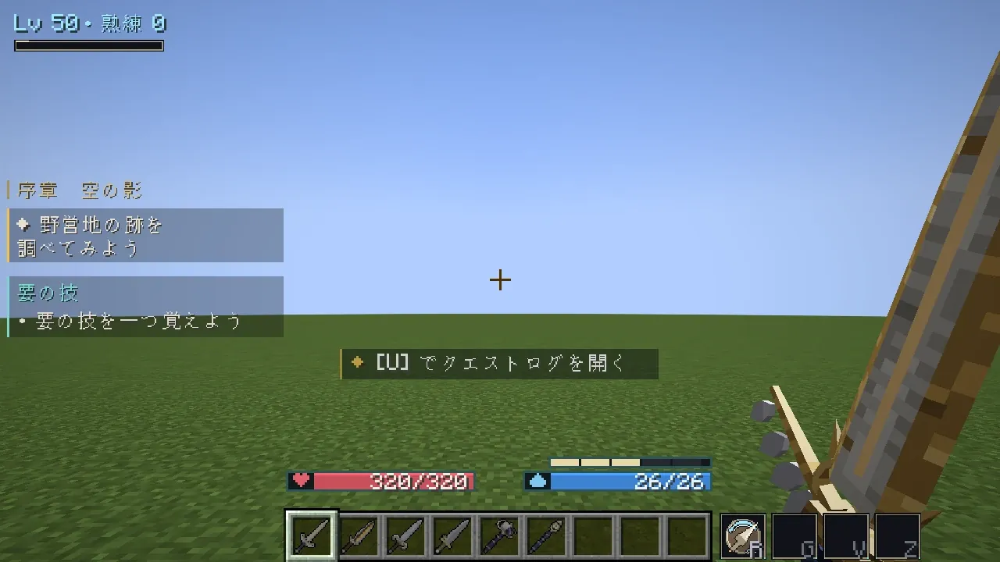
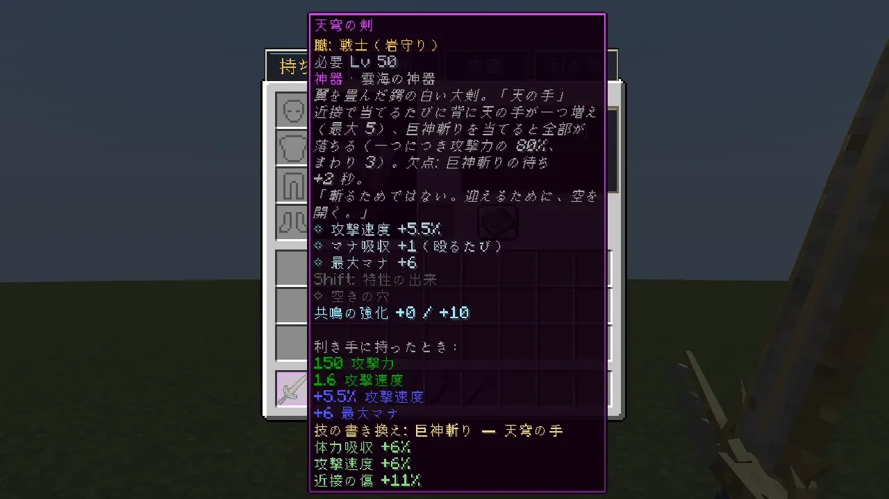
OVER THE SHOULDER
肩越しの視点
この mod は、戦いやすい三人称を自分で持っています。

- F5 で一人称と肩越しを切り替えます。画面の真ん中に照準が出ます。
- 殴る・技・弓は、照準の先へ当たります。
- F6 で左右の肩を替えます。肩越しの遠さは設定で変えられます。
- Shoulder Surfing Reloaded を入れているときは、そちらの視点を使います。
COMBAT
戦いの手ごたえ
強い相手ほど、力押しでは勝てません。予告を見て避け、隙に大きく削ります。
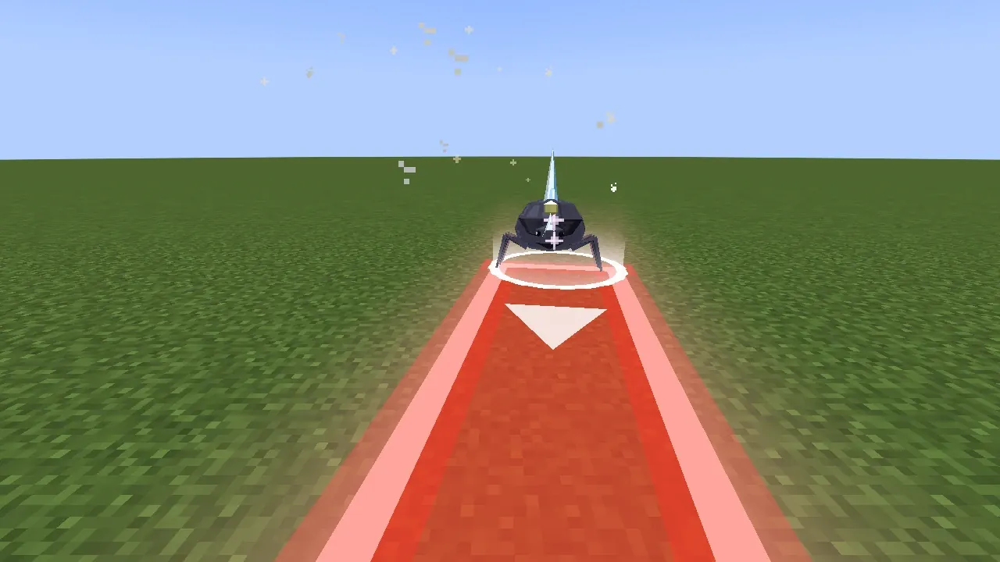
- 主と名のある敵は構えていて硬く、大技を出し終えた直後の 3 秒だけ大きく削れます。
- 大技の前には、床に赤い予告が出ます。予告の外へ出れば当たりません。
- 戦いの最中の食事は 20 秒に一つまでです。
- 巨神の背の試練には時間切れがあります（歩・智は 5 分、闘は 6 分）。
- 体力と傷の数字は、読みやすいよう 10 倍で表しています。
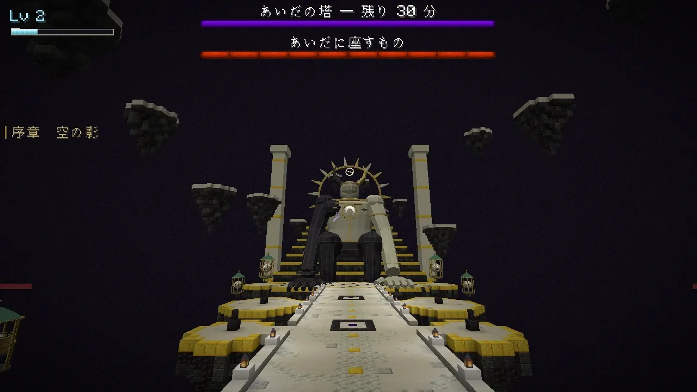

KEYS
戦いのキー
キーは、設定の「操作」の「天と淵のあいだ」の項目で変えられます。
| キー | 働き |
|---|---|
| R G V Z | 技の枠 1〜4 の技を使う |
| K | 技の画面（技の木・枠に置く） |
| J | ステータス（レベル・基礎の値と効き目） |
| H | 護符を使う（装飾の護符の枠に付けた護符） |
| F5 / F6 | 肩越しの視点 / 左右の肩を替える |
| [ | 武器の点検（かざして回す） |